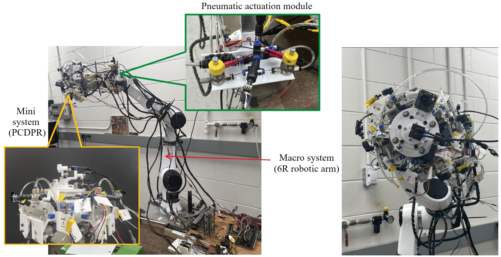
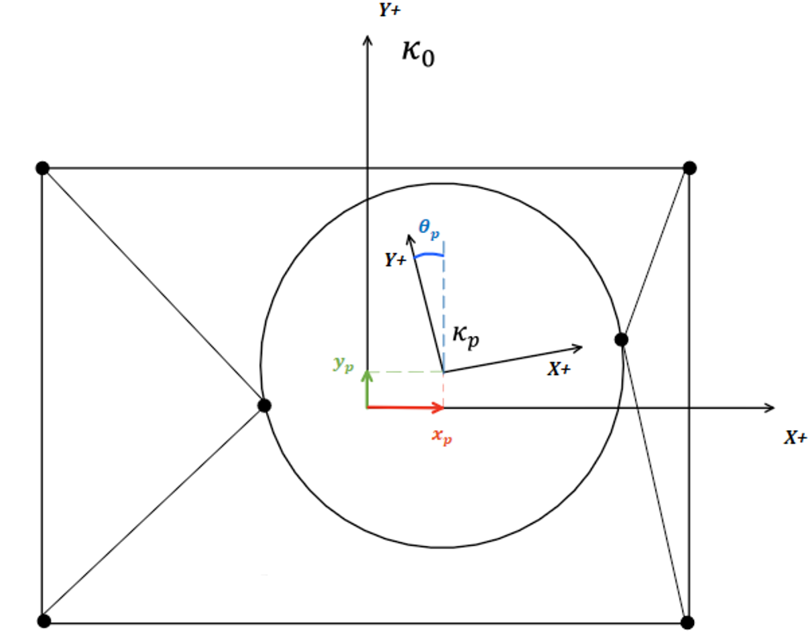
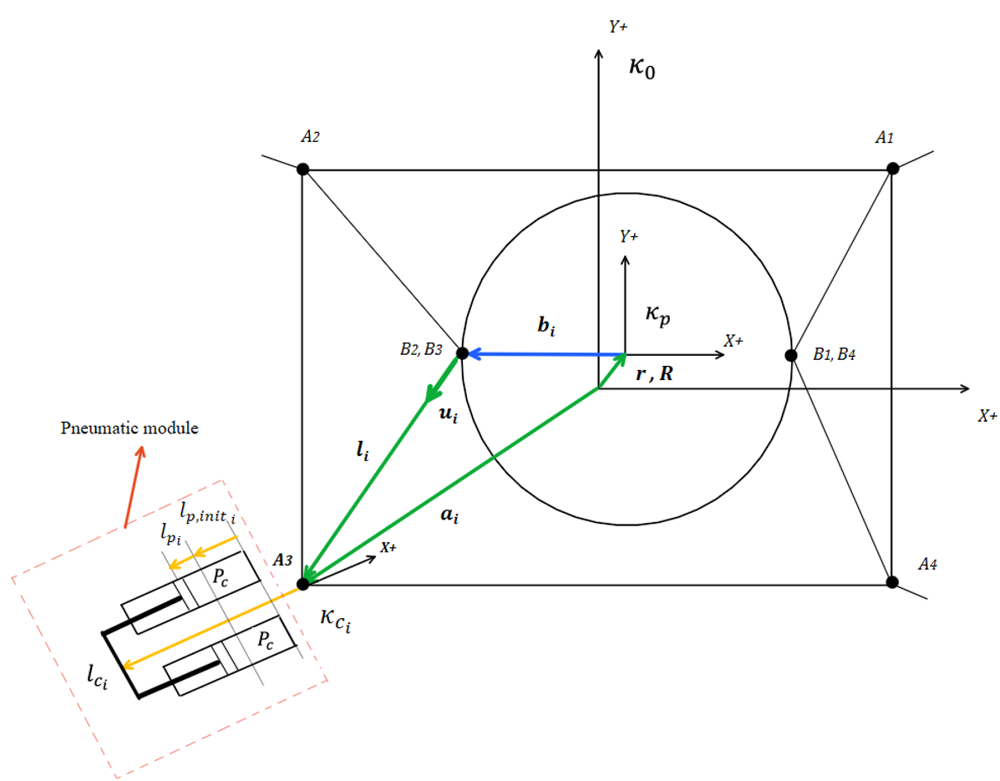
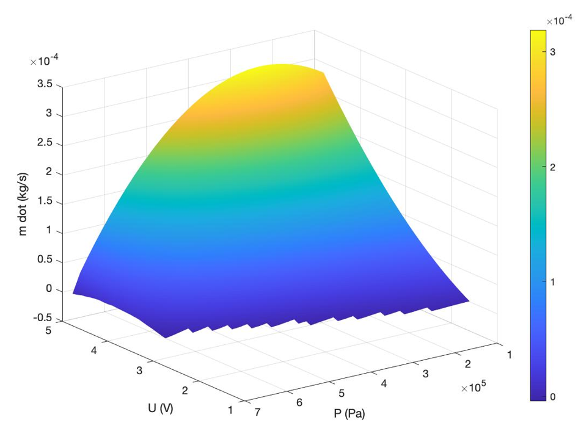
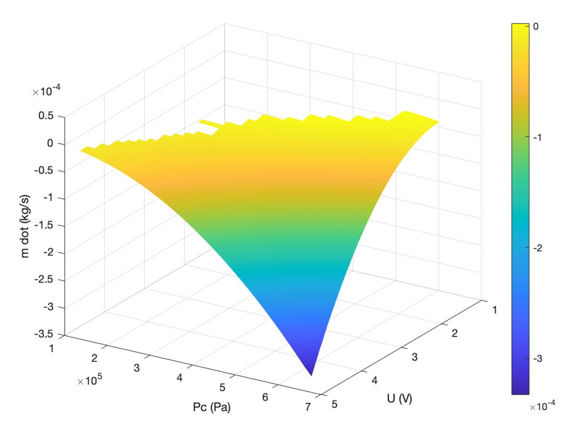
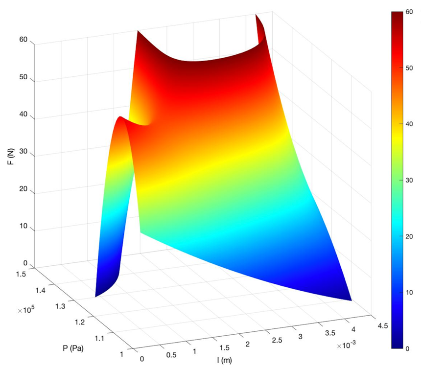
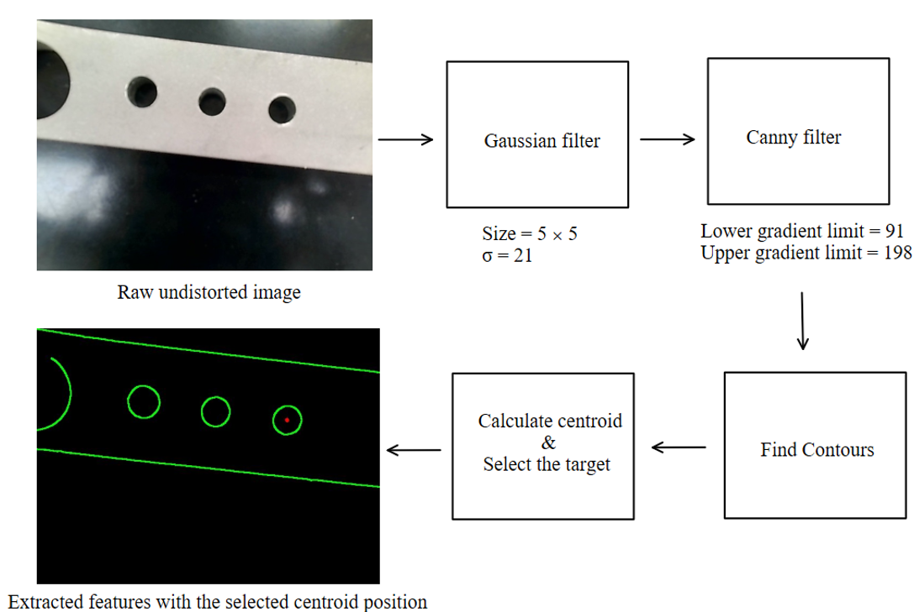
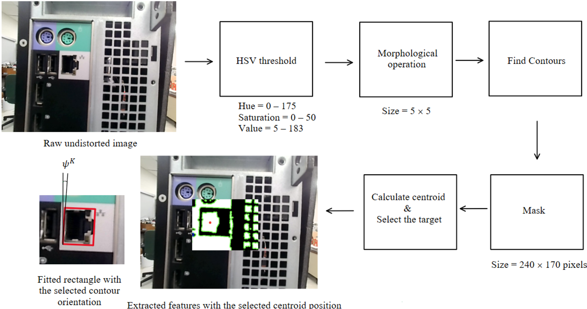

Design and Impedance Control of a
4-DOF Pneumatic Cable Driven Parallel Robot
Robotics and Manufacturing Automation Lab - McMaster University
Member(s) : Yingying Li
Supervisor(s) : Dr. Gary M. Bone
Robotic arms are widely used in automated machining and assembly because of their large workspace and ability to perform different tasks. However, their high inertia can lead to slow responses and large contact forces during operations. Macro–mini robotic systems address this problem by placing a lightweight end-effector between the robotic arm and the tool.
The robotic arm is responsible for placing the end effector and tool close to the desired location. The end-effector then carries the tool and completes the remaining tasks. Existing passive end-effectors respond quickly but usually have fixed stiffness and limited degrees of freedom, while active end-effectors provide adjustable compliance but often are too heavy for commercial robotic arms.
These limitations motivate the development of a lightweight pneumatic cable-driven parallel robot (PCDPR) as an end-effector with active impedance control.
The goal is to achieve fast and reliable assembly with low contact forces under uncertain contact conditions.
In the experiments, the PCDPR achieved a 98% success rate in the peg-in-hole task under an initial lateral misalignment of 1.7 mm. It also achieved a 92% success rate in the RJ45 insertion task under an initial yaw misalignment of 3 degs.
A macro–mini robotic system consists of a large macro system and a smaller, lighter mini system. The macro system provides a large workspace and moves the mini system close to the task location. The mini system then performs precise local motions and controls the interaction between the tool and the environment. Its lower inertia allows it to respond faster and produce smaller force overshoots than the macro system. In this study, a 6R robotic arm serves as the macro system, and a pneumatic cable driven parallel robot (PCDPR) serves as the mini system. Pneumatic actuators are used because they are lightweight and provide a higher force-to-weight ratio than electric motors.

Macro–mini configuration of the PCDPR integrated with a serial robotic arm
The diagram below presents the system interactions of the PCDPR. The body of cable-driven parallel robot (CDPR) is shown in green, the pneumatic actuator module is shown in orange, and the valve system is shown in blue. The proportional valves regulate the pressures inside the pneumatic cylinders, which generate cable tensions and move the CDPR platform in two lateral directions and the yaw direction. A pneumatic bag actuator provides motion in the insertion direction. The PCDPR is carried by a 6-DOF robotic arm, while a 2D RGB camera provides visual feedback for positioning it near the assembly target. Solid lines represent physical connections, and dotted lines represent energy or information flow.

System interaction diagram of PCDPR
Through this arrangement, the pneumatic cylinders generate cable tensions that allow the platform to move in two lateral directions and rotate about the yaw axis. The circular platform is located within a rectangular frame and is actuated by four cables connected between the fixed pulleys and the platform. Separate coordinate frames are defined for the fixed structure, the moving platform, and each pneumatic module. This geometric description forms the basis for the kinematic and dynamic models of the PCDPR.

Displacement of the PCDPR platform

Geometry of the PCDPR
After defining the geometry of the PCDPR, the pneumatic actuators were modeled to describe how the control inputs generate motion and force. The mass flow rate through each proportional valve was modeled as a function of the applied voltage and chamber pressure. This relationship describes how the valves generate cable tensions while regulating the cylinder pressures. The pneumatic bag actuator was modeled separately, with its output force expressed as a function of pressure and displacement. Together, these models describe how the pneumatic actuation system drives the platform and regulates the insertion force and displacement.

Fitted mass flow rate model of a charging valve

Fitted mass flow rate model of a discharging valve

Fitted output force model of the bag actuator
Impedance control is used to provide compliant motion during assembly and reduce the contact forces caused by position and orientation errors. Instead of directly controlling the external force, the controller defines a desired relationship between the platform motion error and the external wrench through the selected Cartesian stiffness and damping. The controller uses the desired piston displacements and velocities, the desired platform accelerations, the Cartesian stiffness and damping matrices, and the orientation of the robotic arm as reference inputs. The Cartesian impedance is converted into joint-space impedance, which is used with the piston displacement and velocity errors to calculate the desired cable forces. A null-space tension is added to keep all four cables under positive tension, and the friction disturbance is estimated from the measured chamber pressures. The desired cable forces and estimated friction are then converted into desired cylinder pressures. Finally, a model-based pressure controller calculates the required mass flow rates, assigns them to the charging or discharging valves, and uses the inverse valve models to determine the control voltages. The final outputs are 8 voltage commands applied to the proportional valves that regulate the pressures of four cylinder modules, which thereby driving the PCDPR platform.

Block diagram of the cascaded impedance and model-based pressure controllers
The bag actuator controller regulates the force applied in the insertion direction. Since the actuator force depends on both pressure and displacement, the desired force and measured displacement are used to calculate the desired bag pressure. The measured pressure is then compared with the desired pressure, and a PID controller generates the pressure control signal. A deadband threshold prevents frequent switching of ON/OFF valves when the pressure error is small. The controller outputs two binary commands that open or close the charging and discharging valves.

PID bag actuator pressure controller with deadband threshold
The RGB camera provides visual feedback for guiding the robotic arm and positioning the PCDPR close to the assembly target before insertion. Two feature extraction methods were developed because the hole and RJ45 socket have different visual characteristics. For the peg-in-hole task, grayscale filtering, edge detection, and contour extraction are used to locate the center of the hole. For the RJ45 task, HSV thresholding, morphological processing, and contour extraction are used to determine the position and orientation of the socket. The detected target pose is then transformed into the robot coordinate frame for initial alignment.

Feature extraction process for determining the center of the hole

Feature extraction process for determining the position and orientation of the RJ45 socket on the back of the computer
Based on the allowable displacement range of the cylinder's piston, the feasible workspace of the PCDPR was calculated for the selected cable configuration. The workspace represents all platform poses that can be reached while keeping the four piston displacements within their mechanical limits. It includes translations in the (x) and (y) directions together with rotation about the yaw axis, and its polyhedral shape shows how the achievable motion in one direction changes with the other two.

Piston feasible workspace
Each pneumatic module consists of two pneumatic cylinders, a cable-carrying plate, a pulley, proportional valves, an air manifold, and a linear potentiometer. The cylinders drive the cable-carrying plate, while the potentiometer measures the piston displacement. Support structures were added to increase the stiffness of the module. Finite element analysis was also conducted on the cable-carrying plate and the holder’s base, confirming that their deformation remained small under the expected loading conditions.

Components of the pneumatic module

FEA result of the holder’s base

FEA result of the cable-carrying plate
The following graphs present the other key components of the PCDPR and show how they are assembled to form the complete system.


Key components of the PCDPR

The fully assembled PCDPR
Two insertion tasks were performed to evaluate the PCDPR. In the peg-in-hole task, the peg and hole had an assembly clearance of 0.1 mm. The system achieved a success rate of 48 out of 50 trials under a maximum initial lateral misalignment of 1.7 mm. In the RJ45 task, the system successfully inserted an RJ45 connector into a computer socket in 46 out of 50 trials under a maximum initial yaw misalignment of 3 degs.

Experimental setup of the peg-in-hole insertion task

Experimental setup of the RJ45 insertion task
The videos below show the insertion processes for the two tasks.
Peg-in-hole task, view 1
Peg-in-hole task, view 2
RJ45 insertion task